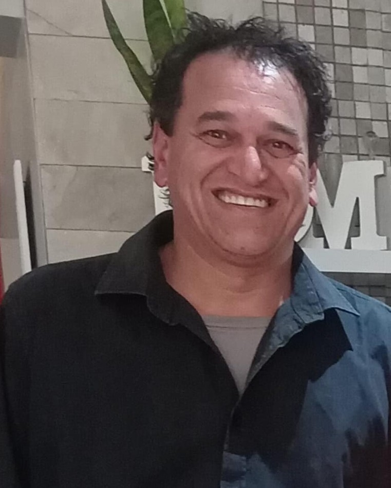

WHO WE ARE
About Vision Security Systems
A Helderberg-based security and electrical installation business built on lasting results.

OUR STORY
How we got here
In 1993, Ebrahim Baderoen started working for a small tech company in Stellenbosch. In 1999, he established his own company, Vision Security Systems. From then on, he has built a loyal customer base and has hired a few employees to assist him. From the old security technology of the early 2000’s to the modern systems of today, Vision Security Systems has kept with the times. Vision Security Systems is a registered company with the Private Security Industry Regulatory Authority (PSIRA).
WHAT DRIVES US
Mission & vision
Mission
Selling quality service is the main mission of Vision Security Systems. We help clients understand their security systems. It's easy to buy the tech yourself, but difficult to implement and understand those systems. That is why Vision Security Systems exists.
Vision
Our vision is to set customers up with quality systems that are long-lasting, and to provide services that are reliable, leaving customers with newfound trust in our company. We wish to continue providing jobs to those who are capable and willing to work for Vision Security Systems.
Want to work with us?
Get in touch for a no-obligation quote or send us an enquiry.